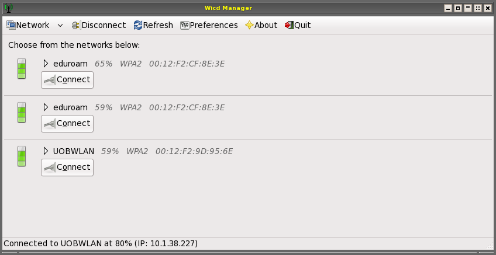
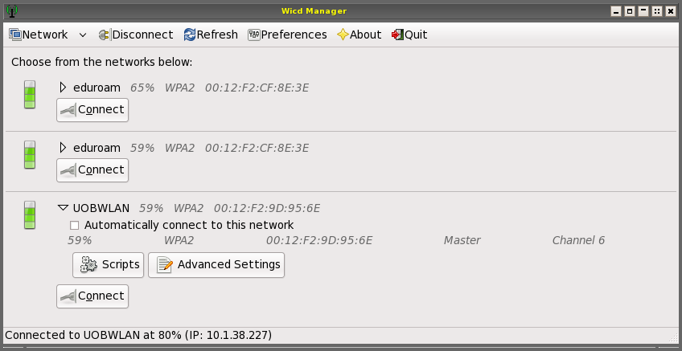
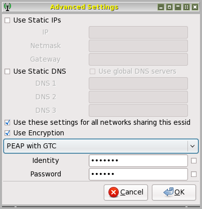

(This is a supplement my web site
to on using Linux on laptops,
and to my web page on accessing the campus wireless system
http://www.cs.bham.ac.uk/~axs/laptop/wpa/.)
I solved the problem by running system-config-selinux and setting permissive mode.
For a more complete discussion see:
http://majblog.wordpress.com/2009/01/26/wicd-se-linux-policy-fix-for-fedora-10/It is possible to reset selinux to the secure mode after a connection has been made.
NOTE ADDED 26 Jun 2010: I now disable selinux completely in
/etc/selinux/config by using SELINUX=disabled
2 Jun 2009: Fedora 10, using wcid
For unknown reasons I started having difficulty connecting to
wireless networks after upgrading my three and a half year old Dell
latitude D610 from F9 to F10. My old scripts using wpa_supplicant
did not connect as reliably as they used to, and I could not get
NetworkManager to do anything useful. I had previously, when using
Fedora 9, found that for connection to public services, e.g. at
airports, 'wlassistant' worked well, but I found even that
failing to connect after recent upgrades of the kernel.
However I have now discovered that 'wicd' (pronounced 'Wicked'?) works very well, although it means I have to stifle my dislike of graphical interfaces. I would much prefer to find a way to get my old scripts working. But for now 'wicd' works instead, as described below. My thanks to Damien Duff for advice when I first started it up.
NOTE ADDED 26 Jun 2010: need to run 'dhclient -r'
I later found a web site suggesting that there was a problem with dhclient not releasing connections properly.
I was then able to get my scripts working again, by doing the following after starting wpa supplicant (run either as root, or using 'sudo'):# release any previous dhcp lease dhclient -r # start up a new dhcp connection using eth1 dhclient eth1 -v ###(also works with 'wlan0' instead of 'eth1' on Fedora 13)The '-v' flag is not necessary but provides useful information about how the connection process is proceeding, and when it has succeeded.
Wicd on Ubuntu Intrepid
It seems that some users of Ubuntu Intrepid who were having trouble
with NetworkManager find that 'wicd' works fine.
E.g. see
http://ubuntuforums.org/showthread.php?t=872701
Entry for December 5th, 2008, 12:17 PM (Gaccm).
Installing wicd on Fedora 10
I fetched the latest stable version (wicd-1.5.9) from here:
http://sourceforge.net/project/showfiles.php?group_id=194573
and followed the instructions here:
http://wicd.net/moinmoin/Wicd%20on%20FC9.
(apart from changing the 'wget'
command to fetch a more recent version, 1.5.9, selected from the
sourceforge web site.)
I did not have the problems with selinux mentioned in the moinmoin
message.
Using wicd on Fedora 10
Wicd has two components, a server and a client. After installation I
ran 'system-config-services'. I used that to disable NetworkManager,
and to ensure that the 'wicd' service was running.
Then to get the client running I typed, in an xterm window:
wicd-client -n
That brought up a panel showing available networks. See the
image below (shown after connection was completed):

In some parts of the building it showed more options, including UOBGuest.
In principle it would be possible to invoke wicd via a mouse menu, or have it launched automatically when X11 starts up. For now I am happy to give the above command to start it up.
To configure a network (eg. UOBWLAN) click on the white right-pointing triangle next to the name. That brings in two more buttons labelled 'Scripts' and 'Advanced settings'.


NB 26 Jun 2010: a certificate is required for the new service: uobwifi.
So choose 'PEAP with TKIP'.
See
http://www.wireless.bham.ac.uk/start/configuration/linux.shtml
(Shows how to connect using NetworkManager applet.)
My instructions for using the uobwifi connection on linux are
here.
The new certificate (required from summer 2010) is here
http://webdev1.bham.ac.uk/uob_root_linux.pem
Place it in /etc/cert or wherever you keep certificates. (You may
have to create the directory, as superuser.)
I have found that once the connection has been made I can click on 'quit' to get rid of the wicd window, and the connection goes on working.
It also connects with my wireless access point at home using WPA-PSK+TKIP.
Maintained by
Aaron Sloman
School of Computer Science
The University of Birmingham